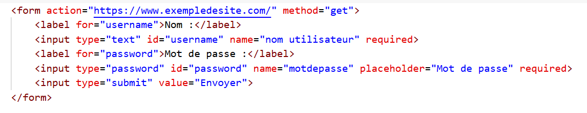
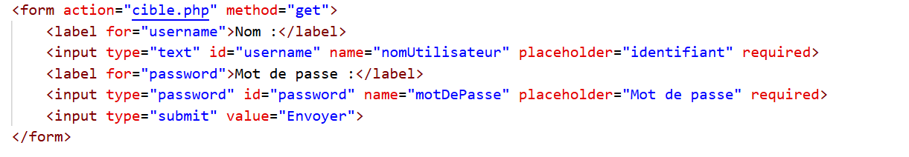
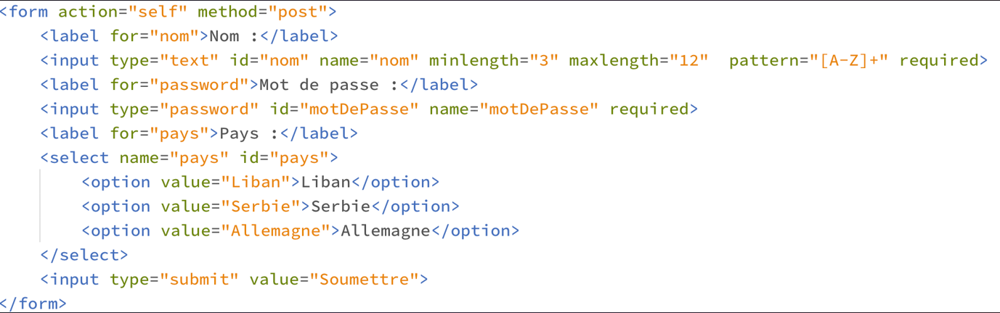

Proposition de Correction: EXEMPLE D'ÉVALUATION
LIRE DU CODE HTML
Exercice 1
Quelques questions sur l'extrait de code html reproduit ci-dessous.
- Que va produire cet extrait lors de son exécution sur un navigateur ?
Il va produire un formulaire avec un champ de saisie pour le nom de l'utilisateur, un
champ de saisie pour le mot de passe et un bouton de soumission.
- Expliquer le sens de la balise <form> et de l'attribut action présents en première ligne de
cet
extrait
La balise <form> est une balise de formulaire qui permet de créer un formulaire.
L'attribut action est un attribut qui permet de spécifier l'URL de la page qui va traiter les
données du formulaire.
- Expliquer ce que signifie l'attribut method à l'intérieur de la balise <form>, quel autre
valeur
aurait-il pu prendre ?
L'attribut method à l'intérieur de la balise <form> est un attribut qui
permet de spécifier la méthode de transmission des données du formulaire. Il aurait pu prendre la valeur
"post".
- Quelle est l'utilité de l'attribut name à l'intérieur de la balise <input> ?
L'attribut name à l'intérieur de la balise <input> est un attribut qui
permet de spécifier le nom de la variable qui va contenir les données du formulaire.
- Quelle est l'utilité de l'attribut type à l'intérieur de la balise <input> ?
L'attribut type à l'intérieur de la balise <input> est un attribut qui
permet de spécifier le type de données que le champ de saisie va contenir.
- Quelle est l'utilité de la balise <label> présente dans cet extrait, et des attributs for
et id présent dans la balise <label>?
La balise <label> présente dans cet extrait est une balise qui permet de créer un
label pour un champ de saisie. Les attributs for et id présent dans la balise
<label>
sont des attributs qui permettent de lier le label au champ de saisie.
- Quelle est l'utilité de l'attribut required présent dans la balise <input>?
L'attribut required présent dans la balise <input> est un attribut qui
permet de spécifier que le champ de saisie est obligatoire.
- Quelle est l'utilité de l'attribut placeholder?
L'attribut placeholder est un attribut qui permet de spécifier un texte qui
apparaît dans le champ de saisie lorsque celui-ci est vide.
Extrait :

Connaissance du cours
Exercice 2
Cet exercice est un QCM. Cocher la (ou les) bonne(s) réponse(s)
- Parmi les réponses suivantes, que permet d'effectuer la méthode POST du protocole http ?
- Définir le style d'une page web.
- Pirater des données bancaires.
- Envoyer une page web vers le client.
- Envoyer les données saisies dans un formulaire HTML vers un serveur.
- Un internaute clique sur un lien qui envoie la requête http suivante à un serveur
:
http://jaimelaneige.com/ma_planche/traitement.php?nom=Snow&prenom=Jon
Que demande cette requête au serveur ?
- De renvoyer le fichier traitement.php en identifiant nom et prénom à Snow et Jon.
- D'exécuter le fichier traitement.php en identifiant nom et prénom à Snow et Jon.
- D'indiquer si Jon Snow a bien pris son traitement.
- De renvoyer le fichier traitement.php en affichant prénom et nom : Jon
- Que peut-on affirmer au sujet des formulaires de pages Web ?
- Les variables d’une requête POST sont affichées dans l’URL.
- Une requête GET peut être utilisée pour transmettre des données sensibles.
- Les variables d’une requête GET sont affichées dans l’URL.
- Une requête POST peut être utilisée pour transmettre des données sensibles.
- On considère le formulaire ci-dessous :
Quel est votre langage préféré ?
Python □ Java □ Php □
Quelle balise parmi les quatre suivantes a été utilisée pour les cases à cocher ?
- <input type="radio">
- <input type="circle">
- <input type="checkbox">
- <input type="square">
- Un élément form (un formulaire) d'une page HTML contient un élément button de type submit. Un clic sur
ce bouton :
- envoie les données du formulaire vers la page définie par l'attribut action de
l'élément form
- efface les données entrées par l'utilisateur dans le formulaire
- envoie les données du formulaire vers la page définie par l'attribut method de l'élément form
- ne fait rien du tout si un script javascript n'est pas associé au bouton
- Dans un formulaire sur un page web, pour transmettre des données sécurisées comme un mot de passe ou un
numéro de carte bancaire, il vaut mieux utiliser la méthode :
PASSER DU FORMULAIRE AU CODE HTML
Exercice 3
Écrire un extrait de formulaire html (balise <form> et tout ce qui est dedans)
afin qu'après avoir ouvert puis rempli ce formulaire sur le navigateur, ce dernier affiche
l'URL ci-dessous. On s'efforcera de proposer un formulaire "convivial" où les champs sont bien
identifiables par l'utilisateur.

Exercice 4
Écrire un extrait de formulaire (balise <form> et tout ce qui est dedans) )
afin que ce formulaire demande :
- un nom composé de trois à douze lettres majuscules, à renseigner obligatoirement
- un mot de passe à renseigner obligatoirement
- un pays à sélectionner dans une liste déroulante de trois pays
On fera en sorte que le mot de passe soit transmis au serveur de manière la plus sécurisée possible.
